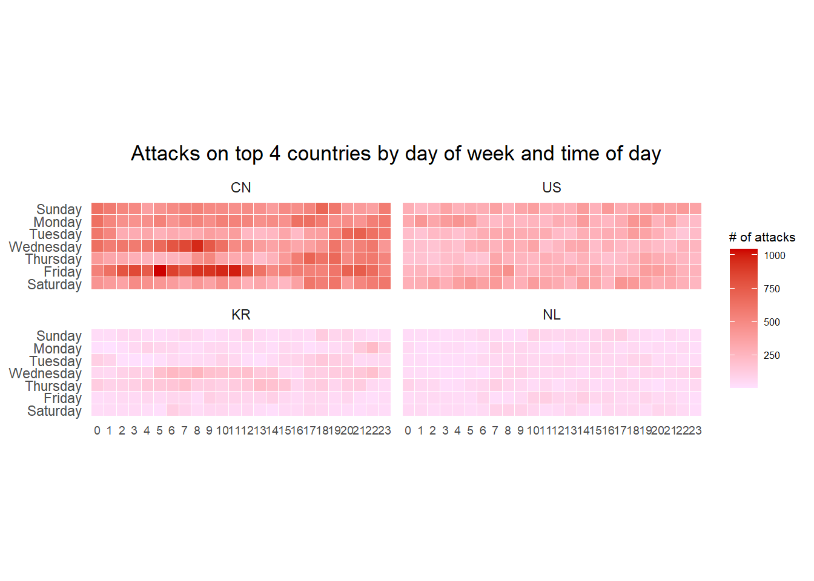

pacman::p_load(tidyverse, readxl, data.table,
ggthemes, scales, viridis,
knitr, lubridate, gridExtra, CGPfunctions)Hands-on Exercise 06 - Time-Oriented Data
1. Overview
In the sixth lesson, we learn to visualise and analyse time-oriented data such as calendar heatmap, cyclce plot, slopeplot, and a horizon chart.
2. Getting Started
2.1. Installing and Loading Packages
We will use the following R packages for this exercise:
3. Calendar Heatmaps
3.1. Import Data
We will read the dataset on cyber attack records provided by the Course Instructor into the R environment. We will use the read_csv() function from the readr package found in tidyverse.
attacks <- read_csv("data/eventlog.csv")
kable(head(attacks))| timestamp | source_country | tz |
|---|---|---|
| 2015-03-12 15:59:16 | CN | Asia/Shanghai |
| 2015-03-12 16:00:48 | FR | Europe/Paris |
| 2015-03-12 16:02:26 | CN | Asia/Shanghai |
| 2015-03-12 16:02:38 | US | America/Chicago |
| 2015-03-12 16:03:22 | CN | Asia/Shanghai |
| 2015-03-12 16:03:45 | CN | Asia/Shanghai |
Using kable() from the knitr packaage to view the data, it is observed that the data contains three columns:
timestamp: datetime values in POSIXct format
source_country: source of cyber attack following ISO 3166-1 alpha-2 country code
tz: timezone of the source IP address.
3.2. Data Preparation
First, w write the following function to derive the weekday and hour of day fields to be used later in the calendar heatmap:
hr_wkday <- function(ts, sc, tz) {
real_times <- ymd_hms(ts,
tz = tz[1],
quiet = TRUE)
dt <- data.table(source_country = sc,
weekday = weekdays(real_times),
hour = hour(real_times))
return(dt)
}3.3. Basic Calendar Heatmap
Next, we derive a tibble data frame containing cyber attacks grouped by source country time zone.
wkday_levels <- c('Saturday', 'Friday',
'Thursday', 'Wednesday',
'Tuesday', 'Monday', 'Sunday')
attacks <- attacks %>%
group_by(tz) %>%
do(hr_wkday(.$timestamp,
.$source_country,
.$tz)) %>%
ungroup() %>%
mutate(weekday = factor(
weekday, levels = wkday_levels),
hour = factor(
hour, levels = 0:23))
kable(head(attacks))| tz | source_country | weekday | hour |
|---|---|---|---|
| Africa/Cairo | BG | Saturday | 20 |
| Africa/Cairo | TW | Sunday | 6 |
| Africa/Cairo | TW | Sunday | 8 |
| Africa/Cairo | CN | Sunday | 11 |
| Africa/Cairo | US | Sunday | 15 |
| Africa/Cairo | CA | Monday | 11 |
Lastly, we create the plot:
grouped <- attacks %>%
count(weekday, hour) %>%
ungroup() %>%
na.omit()
ggplot(grouped,
aes(hour,
weekday,
fill = n)) +
geom_tile(color = "white",
size = 0.1) +
theme_tufte(base_family = "Helvetica") +
coord_equal() +
scale_fill_gradient(name = "# of attacks",
low = "thistle1",
high = "red3") +
labs(x = NULL,
y = NULL,
title = "Attacks by day of week and time of day") +
theme(axis.ticks = element_blank(),
plot.title = element_text(hjust = 0.5),
legend.title = element_text(size = 8),
legend.text = element_text(size = 6) )3.4. Multiple Calendar Heatmaps
We can plot multiple calendar heatmaps with the top four source countries of cyber attacks.
First, we have to derive an object containing the count of attacks by source country:
attacks_by_country <- count(
attacks, source_country) %>%
mutate(percent = percent(n/sum(n))) %>%
arrange(desc(n))Next, we prepare the tibble data frame containing the attack records of the top four source countries:
top4 <- attacks_by_country$source_country[1:4]
top4_attacks <- attacks %>%
filter(source_country %in% top4) %>%
count(source_country, weekday, hour) %>%
ungroup() %>%
mutate(source_country = factor(
source_country, levels = top4)) %>%
na.omit()Lastly, we create the plot:
ggplot(top4_attacks,
aes(hour,
weekday,
fill = n)) +
geom_tile(color = "white",
size = 0.1) +
theme_tufte(base_family = "Helvetica") +
coord_equal() +
scale_fill_gradient(name = "# of attacks",
low = "thistle1",
high = "red3") +
facet_wrap(~source_country, ncol = 2) +
labs(x = NULL, y = NULL,
title = "Attacks on top 4 countries by day of week and time of day") +
theme(axis.ticks = element_blank(),
axis.text.x = element_text(size = 7),
plot.title = element_text(hjust = 0.5),
legend.title = element_text(size = 8),
legend.text = element_text(size = 6) )
4. Cylce Plot
4.1. Import Data
We will read the dataset on visitor arrivals from Vietnam provided by the Course Instructor into the R environment. We will use the read_excel() function from the readxl package.
arrive_air <- read_excel("data/arrivals_by_air.xlsx")
glimpse(arrive_air)Rows: 240
Columns: 36
$ `Month-Year` <dttm> 2000-01-01, 2000-02-01, 2000-03-01, 2000-0…
$ `Republic of South Africa` <dbl> 3291, 2357, 4036, 4241, 2841, 2776, 3728, 2…
$ Canada <dbl> 5545, 6120, 6255, 4521, 3914, 3487, 4238, 4…
$ USA <dbl> 25906, 28262, 30439, 25378, 26163, 28179, 2…
$ Bangladesh <dbl> 2883, 2469, 2904, 2843, 2793, 3146, 3489, 3…
$ Brunei <dbl> 3749, 3236, 3342, 5117, 4152, 5018, 5026, 6…
$ China <dbl> 33895, 34344, 27053, 30464, 30775, 26720, 3…
$ `Hong Kong SAR (China)` <dbl> 13692, 19870, 17086, 22346, 16357, 18133, 2…
$ India <dbl> 19235, 18975, 21049, 26160, 35869, 31314, 2…
$ Indonesia <dbl> 65151, 37105, 44205, 45480, 38350, 47982, 5…
$ Japan <dbl> 59288, 58188, 74426, 49985, 48937, 53798, 6…
$ `South Korea` <dbl> 21457, 19634, 20719, 17489, 19398, 17522, 2…
$ Kuwait <dbl> 507, 199, 386, 221, 164, 440, 1943, 2694, 4…
$ Malaysia <dbl> 27472, 29084, 30504, 34478, 34795, 34660, 2…
$ Myanmar <dbl> 1177, 1161, 1355, 1593, 1397, 1715, 1354, 1…
$ Pakistan <dbl> 2150, 2496, 2429, 2711, 2594, 2924, 4001, 3…
$ Philippines <dbl> 8404, 9128, 11691, 14141, 13305, 10555, 968…
$ `Saudi Arabia` <dbl> 1312, 623, 1578, 705, 679, 2749, 5748, 4012…
$ `Sri Lanka` <dbl> 3922, 3988, 4259, 6579, 4625, 4740, 4764, 5…
$ Taiwan <dbl> 15766, 24861, 18767, 22735, 18399, 21042, 2…
$ Thailand <dbl> 12048, 12745, 16971, 20397, 15769, 17217, 1…
$ `United Arab Emirates` <dbl> 1318, 899, 1474, 1284, 1042, 1545, 3641, 33…
$ Vietnam <dbl> 1527, 2269, 2034, 2420, 1833, 2480, 2221, 2…
$ `Belgium & Luxembourg` <dbl> 1434, 1596, 1548, 1592, 1167, 1170, 1912, 1…
$ CIS <dbl> 2703, 1182, 1088, 1012, 660, 712, 911, 864,…
$ Finland <dbl> 1634, 1297, 1220, 1208, 743, 982, 680, 1029…
$ France <dbl> 4752, 6391, 5528, 5544, 4225, 4047, 5769, 6…
$ Germany <dbl> 12739, 13093, 13645, 13366, 10878, 9054, 10…
$ Ireland <dbl> 1292, 1200, 1368, 1345, 1067, 1363, 1348, 1…
$ Italy <dbl> 3544, 2897, 2717, 2512, 2205, 2196, 2988, 6…
$ Netherlands <dbl> 4962, 5054, 4950, 4149, 3643, 3544, 5969, 5…
$ Spain <dbl> 925, 747, 935, 941, 764, 855, 1163, 1669, 1…
$ Switzerland <dbl> 3731, 3980, 3576, 3850, 3025, 2580, 3656, 2…
$ `United Kingdom` <dbl> 28986, 35148, 36117, 33792, 23377, 21769, 2…
$ Australia <dbl> 34616, 26030, 31119, 34824, 33139, 35731, 4…
$ `New Zealand` <dbl> 5034, 3938, 4668, 6890, 7006, 7634, 9502, 6…Using glimpse() to view the data, it is observed that the data contains 36 columns and 240 observations.
4.2. Data Preparation
First, we create two new columns “month” and “year” from the “Month-Year” field:
arrive_air$month <- factor(month(arrive_air$`Month-Year`),
levels=1:12,
labels=month.abb,
ordered=TRUE)
arrive_air$year <- year(ymd(arrive_air$`Month-Year`))We now extract the data for this study, which is arrivals from Vietnam:
vietnam <- arrive_air %>%
select(`Vietnam`,
month,
year) %>%
filter(year >= 2010)
glimpse(vietnam)Rows: 120
Columns: 3
$ Vietnam <dbl> 15781, 16335, 18061, 22154, 21461, 28146, 34020, 25351, 20105,…
$ month <ord> Jan, Feb, Mar, Apr, May, Jun, Jul, Aug, Sep, Oct, Nov, Dec, Ja…
$ year <int> 2010, 2010, 2010, 2010, 2010, 2010, 2010, 2010, 2010, 2010, 20…Next, we compute the yearly average arrival numbers, grouped by month:
hline.data <- vietnam %>%
group_by(month) %>%
summarise(avgvalue = mean(`vietnam`))4.3. Create Cycle Plot
Lastly, we create the plot:
ggplot() +
geom_line(data = vietnam,
aes(x = year,
y = Vietnam,
group = month),
colour="black") +
geom_hline(aes(yintercept=avgvalue),
data=hline.data,
linetype=6,
colour="red",
size=0.5) +
facet_grid(~month) +
labs(axis.text.x = element_blank(),
title = "Visitor arrivals from Vietnam by air, Jan 2010-Dec 2019") +
xlab("") +
ylab("No. of Visitors") +
theme_tufte(base_family = "Helvetica")5. Slopegraph
5.1. Import Data
We will read the dataset on rice yied provided by the Course Instructor into the R environment. We will use the read_csv() function from the readr package found in tidyverse.
rice <- read_csv("data/rice.csv")
glimpse(rice)Rows: 550
Columns: 4
$ Country <chr> "China", "China", "China", "China", "China", "China", "Chin…
$ Year <dbl> 1961, 1962, 1963, 1964, 1965, 1966, 1967, 1968, 1969, 1970,…
$ Yield <dbl> 20787, 23700, 26833, 28289, 29667, 31445, 31006, 31868, 314…
$ Production <dbl> 56217601, 65675288, 76439280, 85853780, 90705630, 98403990,…Using glimpse() to view the data, it is observed that the data contains four columns and 550 records on the yield of rice by year and country.
5.2. Create Slopegraph
rice %>%
mutate(Year = factor(Year)) %>%
filter(Year %in% c(1961, 1980)) %>%
newggslopegraph(Year, Yield, Country,
Title = "Rice Yield of Top 11 Asian Counties",
SubTitle = "1961-1980",
Caption = "")